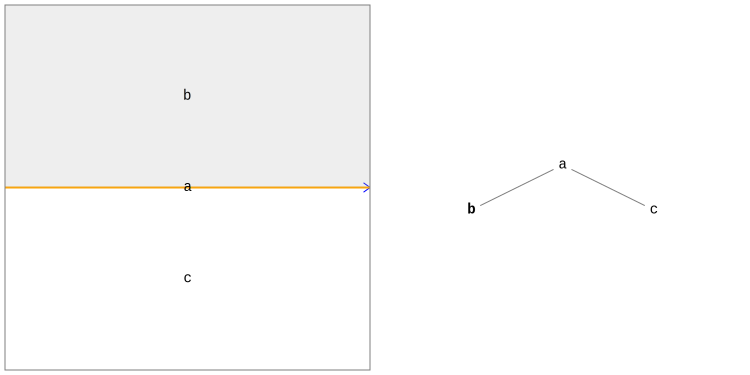
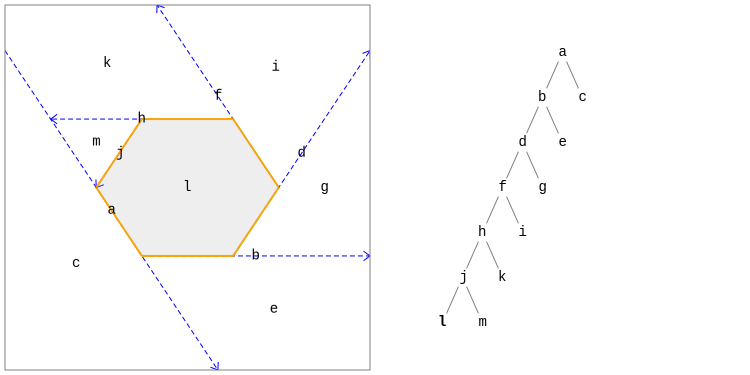
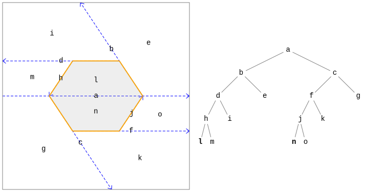

|
Binary Space Partitioning Tree TutorialContentsOverviewThis tutorial gives a brief introduction to the BSP tree data structure and its use in Commons Geometry. All code in this tutorial can be found in the org.apache.commons.geometry.examples.tutorials.bsp package, which is included in the library source distribution. IntroductionBinary space partitioning (BSP) trees are a geometric data structure used throughout Commons Geometry. They can be used for many purposes but are primarily used in this library to represent regions of space, such as polygons in 2D and polyhedrons in 3D. The data structure is very flexible and, unlike some other geometric data structures, can be used to represent infinite as well as finite regions in Euclidean and other spaces. The main function of BSP trees is the recursive partitioning of space. The partitioning is performed by hyperplanes, which can be pictured as generalizations of the idea of planes in Euclidean 3D space. For example, lines in Euclidean 2D space and great circles in spherical 2D space are both hyperplanes. Hyperplanes split the space around them into 3 parts: (1) points that lie on the "plus" side of the hyperplane, (2) points that lie on the "minus" side, and (3) points that lie on the hyperplane itself. Each node in a BSP tree can be associated with a hyperplane that splits the space of the node into two smaller spaces, each of which is assigned to a child node. This splitting hyperplane is called the node's "cut" hyperplane. If a node does not have a cut, it is a leaf node. In the case of BSP trees representing regions, each node is also assigned a location attribute indicating whether or not that node lies inside or outside of the region being represented. The full region then consists of the union of all of the spaces represented by the "inside" leaf nodes. The best way to get a feel for BSP trees is to see how they are constructed. The next two sections construct the same 2D region using two separate approaches: direct cutting of tree nodes (bottom-up) and insertion of region boundaries (top-down). We will use Euclidean 2D space since it is the easiest to visualize, however, the techniques demonstrated apply to all spaces and dimensions in Commons Geometry. Bottom-Up ConstructionIn this section, we will construct a BSP tree representing a 2D shape that I refer to as a "skewed bow tie". This will give us a good idea of how BSP trees work and how their internal structure is used to represent regions of space. We will start our BSP tree building adventure by constructing a simple but essential object: a Precision.DoubleEquivalence instance from the Commons Numbers library. Nearly all code that uses Commons Geometry begins with this step. This class is used to perform floating point comparisons and smooth over floating point errors that accumulate during computations. This allows points and other values that are close but not exact to be considered equal for the purposes of the geometric operation. Without this fuzzy comparison, values that should be equal analytically, such as \(\pi \over 4\) and \(\arcsin{1 \over \sqrt{2}}\), may not be evaluated as equal. Precision.DoubleEquivalence precision = Precision.doubleEquivalenceOfEpsilon(1e-6) Our next step is to create an actual BSP tree instance. We will use the RegionBSPTree2D class since we want to represent a region in Euclidean 2D space. Our tree will start out empty, meaning that it contains only a single node (the root node) with a region location of "outside". RegionBSPTree2D tree = RegionBSPTree2D.empty(); The image below shows a visualization of our tree. The portion on the left shows the region represented by the tree with the "inside" parts of the region shaded in gray. The portion on the right shows the internal structure of the tree. As you can see, our tree has only one node, which we've labeled a, and the represented region is completely empty. Now, let's add an inside to our region. We will use the Lines factory class to create a 2D hyperplane (a Line) and use it to cut the root node of our tree. Line rootCut = Lines.fromPointAndDirection(Vector2D.ZERO, Vector2D.Unit.PLUS_X, precision); RegionNode2D a = tree.getRoot(); a.cut(rootCut); Our tree now looks like this: We now have something moderately interesting to look at. Our root node a is now cut with a line along the x axis and we have two new child nodes, b and c, with region locations of inside and outside respectively. There are two very important things to note at this point:
Continuing with tree construction, we can cut the b node to add the upper left boundary of our "skewed bow tie". b.insertCut(Lines.fromPoints(Vector2D.of(1, 0), Vector2D.of(-1, 1), precision)); Our inside region is now restricted to only the d node, and once again the region is infinite. We can also see that the region boundary (indicated with a orange line) no longer travels the full length of a's cut. Rather, only a portion of the cut forms a boundary between an inside part of the region and an outside part. Adding another line, we finally obtain a finite region. d.insertCut(Lines.fromPointAndDirection(Vector2D.of(-5, 1), Vector2D.Unit.MINUS_Y, precision)); The next two cuts produce similar results on the plus side of the root node. c.insertCut(Lines.fromPoints(Vector2D.of(-1, 0), Vector2D.of(1, -1), precision)); h.insertCut(Lines.fromPointAndDirection(Vector2D.of(5, -1), Vector2D.Unit.PLUS_Y, precision)); We now have a nicely balanced tree representing our non-convex "skewed bow tie" region. Before moving on to top-down tree construction, let's take another look at the orange lines representing the region boundaries. Note that the region boundaries always lie directly on the cut hyperplane of an internal node. However, as mentioned before, they do not necessarily extend the entire length of the cut. In fact, the root node a has two disjoint portions serving as region boundaries: one with the outside of the region on the plus side of the node cut (an "outside facing" boundary) and one with the inside of the region on the plus side of the node cut (an "inside facing" boundary). Both types of boundaries can be directly accessed on nodes with the getCutBoundary() method. Top-Down ConstructionIn the previous section, we constructed a BSP tree using the bottom-up approach of cutting leaf nodes with hyperplanes. In this section, we will construct the same region using the top-down approach of inserting hyperplane convex subsets into the top of the tree. This is the most typical construction technique. The first question you may ask here is "What is a hyperplane convex subset?" That is a very good question. The name is quite long only because it is intended to be very generic and apply equally well to all spaces and dimensions. Taking the name exactly at face value it means a subset of a hyperplane that is convex, i.e. the shortest path between any two points in the subset also lies in the subset. Since our 2D hyperplanes are Lines, our hyperplane convex subsets include Segments and Rays along with the less frequently used ReverseRays and subsets containing an entire line, created with Line.span().
In order to construct our wonderful "skewed bow tie" this time, we will insert hyperplane convex subsets representing
the region boundaries into the top of the tree. These will propagate down through the tree, being split as needed
at each internal node, until they hit a leaf node. That leaf node (or nodes) will then be cut as demonstrated in the
bottom-up construction section using the hyperplane of the hyperplane convex subset. Let's start by constructing
our floating point precision object and empty tree and inserting our first boundary, which will be the
line segment Precision.DoubleEquivalence precision = Precision.doubleEquivalenceOfEpsilon(1e-6); RegionBSPTree2D tree = RegionBSPTree2D.empty(); Segment firstBoundary = Lines.segmentFromPoints(Vector2D.of(-5, 0), Vector2D.of(-1, 0), precision); tree.insert(firstBoundary); This first boundary insertion gives us the following BSP tree: 
"Wait a minute!" you may be saying. "I specifically requested that a line segment be inserted into the tree and now I have an entire line span!" This is true. However, if we go back to one of the important notes from the previous section, we will be reminded that node cuts always fill the entire space of the node being cut. That is a crucial part of a tree's geometric consistency. Since we ended up cutting the root node when we inserted our segment, we ended up with an entire line span for a cut. Another way to look at this is that inserted hyperplane subsets always expand to fill the node they land in. Our little segment landed in the eternal expanse of the root node and so became infinite. Let's continue inserting boundaries for the left side of the shape and we will begin to feel our sanity returning. tree.insert(Lines.segmentFromPoints(Vector2D.of(1, 0), Vector2D.of(-5, 3), precision)); tree.insert(Lines.segmentFromPoints(Vector2D.of(-5, 3), Vector2D.of(-5, 0), precision)); The tree now looks exactly as it did halfway through our bottom-up construction exercise. Let's insert the remainder of the tree boundaries, this time using a LinePath to simplify construction of the line segments.
LinePath path = LinePath.fromVertices(Arrays.asList(
Vector2D.of(-1, 0),
Vector2D.of(5, -3),
Vector2D.of(5, 0),
Vector2D.of(1, 0)), precision);
tree.insert(path);We have now completed our "skewed bow tie" shape. The represented region and the internal BSP tree structure are identical to that constructed in the previous section but required far less code. Unless a very specific internal tree structure is required, this top-down construction approach will generally be the preferred one. Convex Regions and Tree PerformanceAstute observers may notice something interesting in our examples after the first triangle portion of the shape is inserted: the tree is completely unbalanced. All of the internal nodes lie on the minus side of their parent, effectively converting the tree into a linked list. This property is not unique to this example but in fact occurs any time region boundaries are used to construct a BSP tree for a convex region. For example, take the hexagon below. No matter what order the region boundaries are inserted, the resulting tree will always degenerate into a simple linked list. This unbalanced hexagon example will not cause any performance issues because it only contains a small number of nodes. However, if we were to construct a convex polygon with a much larger number of sides (1000, for example) then we will most definitely run into issues. This is due to the fact that most BSP tree operations require some sort of traversal from a node to the root or vice versa. When the tree becomes very tall, performance suffers, with the amount of degradation directly related to the height of the tree. So, how do we improve performance here? The main thing we want to do is decrease the height of the tree while keeping the represented region intact. We can do this by inserting cuts into the tree that do not affect the region but only serve to partition the space so the tree is more balanced. We can call such cuts "structural cuts". We will first insert these cuts directly and then take a look at a helper class designed for just this issue. If you recall earlier, we discussed how the RegionCutRule enum can be used to specify which side of a cut node is marked as inside and which side is marked as outside. The default value for cut operations is MINUS_INSIDE which marks the minus side of the cut as inside. There is also the special value INHERIT, which is specifically designed for our use case here. When cutting nodes with this rule, both the plus and minus sides of the cut are assigned the same region location as the parent node. This means that the cut does not affect the region represented by the tree. In order to construct a more balanced version of our hexagon above, we will start by inserting a cut using this rule that will split our hexagon in two.
Precision.DoubleEquivalence precision = Precision.doubleEquivalenceOfEpsilon(1e-6);
RegionBSPTree2D tree = RegionBSPTree2D.empty();
tree.insert(Lines.fromPointAndDirection(Vector2D.ZERO, Vector2D.Unit.PLUS_X, precision).span(),
RegionCutRule.INHERIT);As you can see, we now have a cut in our tree but the represented region is still completely empty. If we insert the hexagon boundaries now, we end up with a more balanced, and therefore more performant, tree than before. One issue with directly inserting structural cuts is that if a region boundary lies directly on a structural cut, the child nodes for that boundary will not be set correctly. Therefore, direct insertion of structural cuts as demonstrated above is only practical when we have knowledge of the boundaries to be inserted and can guarantee that no boundaries lie on a structural cut. In other situations, we can use the PartitionedRegionBuilder2D class. This builder class allows arbitrary structural cuts to be inserted before region boundaries and handles edge cases like the one just described that may affect the region output. The example below uses this builder class to insert a grid of structural cuts centered on the shape centroid before inserting the region boundaries.
Precision.DoubleEquivalence precision = Precision.doubleEquivalenceOfEpsilon(1e-6);
LinePath path = LinePath.fromVertexLoop(Arrays.asList(
Vector2D.of(-4, 0),
Vector2D.of(-2, -3),
Vector2D.of(2, -3),
Vector2D.of(4, 0),
Vector2D.of(2, 3),
Vector2D.of(-2, 3)
), precision);
RegionBSPTree2D tree = RegionBSPTree2D.partitionedRegionBuilder()
.insertAxisAlignedGrid(path.getBounds(), 1, precision)
.insertBoundaries(path)
.build();Boolean OperationsA highly useful feature of the region BSP trees in Commons Geometry is their support for boolean operations, e.g. complement, union, intersection, difference, and xor. The implementation of this feature is based on the paper by Bruce Naylor, John Amanatides and William Thibault Merging BSP Trees Yields Polyhedral Set Operations, Proc. Siggraph '90, Computer Graphics 24(4), August 1990, pp 115-124, published by the Association for Computing Machinery (ACM). This paper provides a wealth of information about the boolean algorithms as well as BSP trees in general and is highly recommended. The example below computes the union of two triangles to form a non-convex region, which we might call a "standard bow tie". A convenience method is used to directly convert the LinePath instances to BSP trees. The result of the operation is written to result, leaving the two input trees a and b unmodified.
Precision.DoubleEquivalence precision = Precision.doubleEquivalenceOfEpsilon(1e-6);
RegionBSPTree2D a = LinePath.fromVertexLoop(Arrays.asList(
Vector2D.of(2, 0),
Vector2D.of(-4, 3),
Vector2D.of(-4, -3)
), precision).toTree();
RegionBSPTree2D b = LinePath.fromVertexLoop(Arrays.asList(
Vector2D.of(-2, 0),
Vector2D.of(4, -3),
Vector2D.of(4, 3)
), precision).toTree();
RegionBSPTree2D result = RegionBSPTree2D.empty();
result.union(a, b);
In the above example, the input trees were left unmodified. If we no longer need one of the input trees in its original form, we can save some memory by writing the result of the operation back into one of the inputs. The next example uses this approach to perform an xor operation.
Precision.DoubleEquivalence precision = Precision.doubleEquivalenceOfEpsilon(1e-6);
RegionBSPTree2D result = LinePath.fromVertexLoop(Arrays.asList(
Vector2D.of(2, 0),
Vector2D.of(-4, 3),
Vector2D.of(-4, -3)
), precision).toTree();
RegionBSPTree2D other = LinePath.fromVertexLoop(Arrays.asList(
Vector2D.of(-2, 0),
Vector2D.of(4, -3),
Vector2D.of(4, 3)
), precision).toTree();
result.xor(other);
|